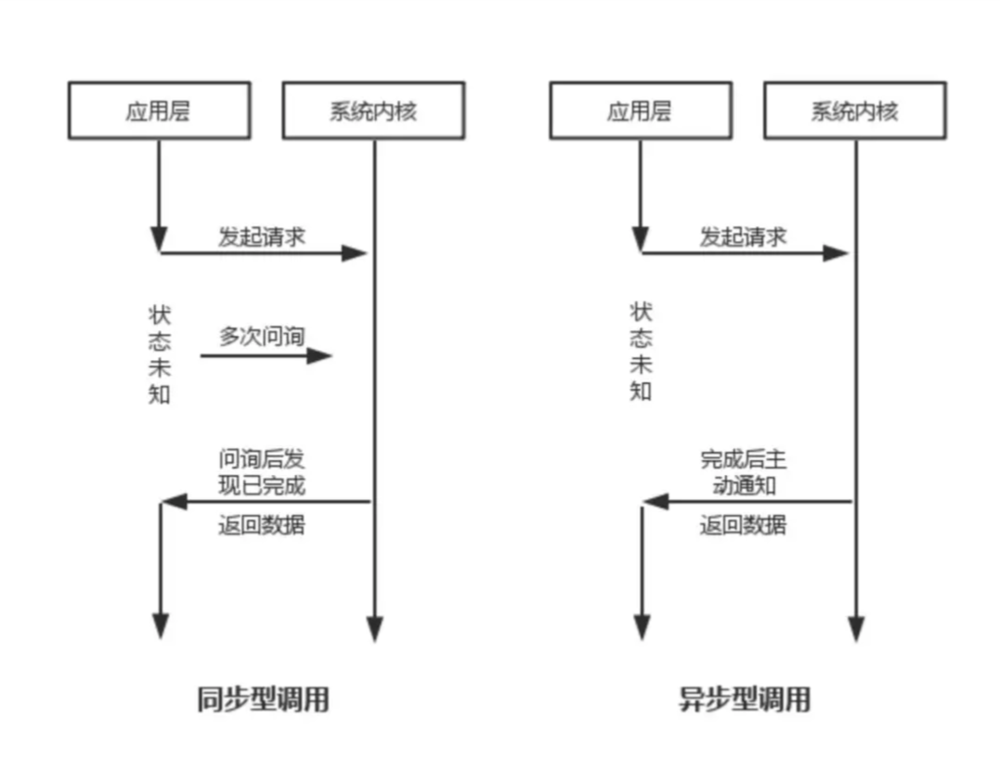
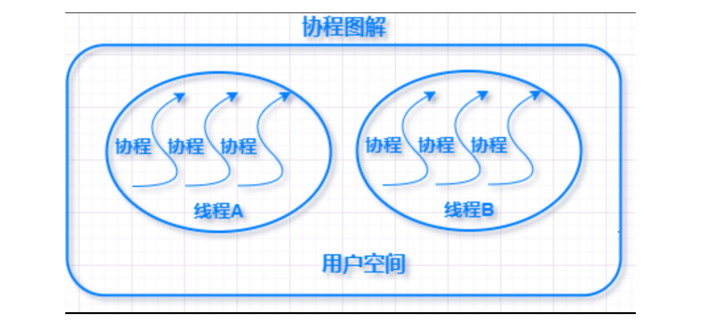

Python-并发编程
Python - 并发编程是为了更快的运行程序，充分利用机器资源。
一、并发与并行
并发与并行
并发：在操作系统中，某一时间段，几个程序在同一个CPU上运行，但在任意一个时间点上，只有一个程序在CPU上运行。 当有多个线程时，如果系统只有一个CPU，那么CPU不可能真正同时进行多个线程，CPU的运行时间会被划分成若干个时间段，每个时间段分配给各个线程去执行，一个时间段里某个线程运行时，其他线程处于挂起状态，这就是并发。并发解决了程序排队等待的问题，如果一个程序发生阻塞，其他程序仍然可以正常执行。
并行：当操作系统有多个CPU时，一个CPU处理A线程，另一个CPU处理B线程，两个线程互相不抢占CPU资源，可以同时进行，这种方式成为并行。
两者区别：
- 并发只是在宏观上给人感觉有多个程序在同时运行，但在实际的单CPU系统中，每一时刻只有一个程序在运行，微观上这些程序是分时交替执行。
- 在多CPU系统中，将这些并发执行的程序分配到不同的CPU上处理，每个CPU用来处理一个程序，这样多个程序便可以实现同时执行。
并发编程：
# 进程：
一个进程好比是一个程序，它是 资源分配的最小单位 。
同一时刻执行的进程数不会超过核心数。不过如果问单核CPU能否运行多进程？答案又是肯定的。单核CPU也可以运行多进程，只不过不是同时的，而是极快地在进程间来回切换实现的多进程。举个简单的例子，就算是十年前的单核CPU的电脑，也可以聊QQ的同时看视频。
# 线程
如果说进程和进程之间相当于程序与程序之间的关系，那么线程与线程之间就相当于程序内的任务和任务之间的关系。
所以线程是依赖于进程的，也称为 「微进程」 。它是 程序执行过程中的最小单元。
# 进程与线程的区别
进程是CPU资源分配的基本单位，线程是独立运行和独立调度的基本单位（CPU上真正运行的是线程）。
进程拥有自己的资源空间，一个进程包含若干个线程，线程与CPU资源分配无关，多个线程共享同一进程内的资源。
线程的调度与切换比进程快很多。
CPU密集型代码(各种循环处理、计算等等)：使用多进程。IO密集型代码(文件处理、网络爬虫等)：使用多线程
# 阻塞与非阻塞
阻塞是指调用线程或者进程被操作系统挂起。
非阻塞是指调用线程或者进程不会被操作系统挂起。
# 同步与异步
同步是阻塞模式，异步是非阻塞模式。
同步就是指一个进程在执行某个请求的时候，若该请求需要一段时间才能返回信息，那么这个进程将会一直等待下去，直到收到返回信息才继续执行下去；
异步是指进程不需要一直等下去，而是继续执行下面的操作，不管其他进程的状态。当有消息返回式系统会通知进程进行处理，这样可以提高执行的效率。
由调用方盲目主动问询的方式是同步调用，由被调用方主动通知调用方任务已完成的方式是异步调用。
# 协程
协程，又称微线程，纤程。英文名Coroutine。协程是一种用户态的轻量级线程。
协程拥有自己的寄存器上下文和栈。协程调度切换时，将寄存器上下文和栈保存到其他地方，在切回来的时候，恢复先前保存的寄存器上下文和栈。因此：
协程能保留上一次调用时的状态（即所有局部状态的一个特定组合），每次过程重入时，就相当于进入上一次调用的状态，换种说法：进入上一次离开时所处逻辑流的位置。
协程的好处：
1.无需线程上下文切换的开销
2.无需原子操作锁定及同步的开销
3.方便切换控制流，简化编程模型
4.高并发+高扩展性+低成本：一个CPU支持上万的协程都不是问题。所以很适合用于高并发处理。
缺点：
1.无法利用多核资源：协程的本质是个单线程,它不能同时将 单个CPU 的多个核用上,协程需要和进程配合才能运行在多CPU上.当然我们日常所编写的绝大部分应用都没有这个必要，除非是cpu密集型应用。
2.进行阻塞（Blocking）操作（如IO时）会阻塞掉整个程序
# CPU密集型（CPU-bound）
CPU密集型也叫计算密集型，指的是系统的硬盘、内存性能相对CPU要好很多，此时，系统运作大部分的状况是CPU Loading 100%，CPU要读/写I/O(硬盘/内存)，I/O在很短的时间就可以完成，而CPU还有许多运算要处理，CPU Loading很高。
在多重程序系统中，大部份时间用来做计算、逻辑判断等CPU动作的程序称之CPU bound。例如一个计算圆周率至小数点一千位以下的程序，在执行的过程当中绝大部份时间用在三角函数和开根号的计算，便是属于CPU bound的程序。
CPU bound的程序一般而言CPU占用率相当高。这可能是因为任务本身不太需要访问I/O设备，也可能是因为程序是多线程实现因此屏蔽掉了等待I/O的时间。
# IO密集型（I/O bound）
IO密集型指的是系统的CPU性能相对硬盘、内存要好很多，此时，系统运作，大部分的状况是CPU在等I/O (硬盘/内存) 的读/写操作，此时CPU Loading并不高。
I/O bound的程序一般在达到性能极限时，CPU占用率仍然较低。这可能是因为任务本身需要大量I/O操作，而pipeline做得不是很好，没有充分利用处理器能力。


二、多线程
每个程序至少有一个进程；
每个进程至少有一个线程；
python语言中，一个cpu核心同一时刻最多只能调度一个线程在工作（全局解释器锁-GIL）。
1 应用场景
多线程适合使用在IO密集型程序中，比如网络请求、文件读写等，因为这些场景线程在遇到 I/O 操作时会释放 GIL
- 网络请求：
- 爬虫程序：向成百上千个网址发送 HTTP 请求，然后等待响应。等待服务器返回数据的时间远大于解析 URL 和构建请求的时间。
- 调用 Web API：例如同时调用多个第三方服务的 API 来聚合数据。
- 微服务间通信：一个服务需要同时向多个其他服务请求数据。
- 文件读写：
- 处理大量文件：例如，需要读取上千个日志文件进行分析，或者将大量数据写入不同的文件。主要的耗时在于磁盘的读写速度，而不是 CPU 处理数据的速度。
- 数据库操作：
- 执行大量数据库查询，特别是当数据库在另一台服务器上时，网络延迟和数据库本身的处理时间成为了瓶颈。
2 创建方式
2.1 函数创建方式
# _*_ coding: utf-8 _*_
import threading
total = 0
def func1(num):
global total
for i in range(num):
total += i
t1 = threading.Thread(target=func1, args=(1000000,))
t1.start()
print(total)
2.2 类继承创建方式
# _*_ coding: utf-8 _*_
from threading import Thread
class MyThread(Thread):
"""自定义线程类"""
def __init__(self, num):
super().__init__()
self.total = 0
self.num = num
def run(self) -> None:
"""start方法自动运行的函数"""
for i in range(self.num):
self.total += i
print(self.total)
thread1 = MyThread(100000)
thread2 = MyThread(10000)
thread2.start()
thread2.join()
thread1.start()
thread1.join()
3 特性
3.1 start 函数
线程准备就绪，等待cpu的调度，具体调度时间由cpu决定，你比如再方式一创建线程中，每次打印的total不一定！因为不确定运行到打印的代码行的时候，线程运行到了哪里。
3.2 join() 函数
主线程会等待当前子线程任务执行完毕后，再向下执行；否则主线程一旦执行，启动了子线程，不会等待子线程结束而自己就先结束了！
3.3 setDaemo函数
守护线程，当主线程结束以后，不会等待子线程结束，而是会将全部子线程立即结束。
thread = threading.Thread(target=func,args=(a,b,))
thread.daemon = True 或者 thread.setDaemon(True) # 设置守护线程
thread.name = True 或者 thread.setName(True) # 设置名称
4 线程锁
线程锁分为：Lock和RLock
两个线程启动，虽说保证主线程等待子线程运行完毕后再继续，但两个子线程之间存在操作同一个变量的情况，这时候就需要使用同一把锁，谁先获得锁线谁就先执行完毕后，才到另外一个。
import time
from threading import Thread, RLock
total = 0
rlock = RLock()
def func1():
rlock.acquire()
global total
for i in range(100000):
total += i
rlock.release()
def func2():
with rlock:
global total
for i in range(100000):
total -= i
t1 = Thread(target=func1)
t2 = Thread(target=func2)
t1.start() # t1线程启动
t2.start() # t2线程启动
# t1.join() # t1执行完主线程才继续往后
# t2.join() # t2执行完主线程才继续往后
# 不使用join方式，使用锁的方式运行全部，此处sleep是为了等子线程运行完成
time.sleep(1)
print(total)
5 线程池
三、多进程
Python 的 GIL 使得多线程无法利用多核 CPU 进行并行计算。多进程通过创建多个独立的 Python 解释器进程，每个进程有自己的 GIL，从而实现了真正的并行。这意味着，在多核 CPU 上，多个进程可以同时执行 Python 代码，充分利用计算资源。
1 应用场景
多进程适合使用在CPU密集型计算程序中，比加密、压缩、数据处理等，因为这些场景线程在遇到 I/O 操作时会释放 GIL
这是多进程最经典、最无可替代的应用场景。当任务需要大量数学运算、逻辑判断，消耗大量 CPU 周期时，就必须使用多进程。
- 科学计算与数据处理：
- 数值模拟：例如蒙特卡洛模拟，需要执行亿万次随机计算。
- 图像/视频处理：对大量图片或视频帧进行滤镜、缩放、特征提取等操作（例如使用
numpy,opencv进行的计算）。 - 数据转换与聚合：对大型数据集（如 Pandas DataFrame）进行复杂的、无法向量化的逐行计算。
- 机器学习与模型训练：
- 超参数搜索：同时训练多个具有不同超参数的模型，每个进程独立运行一个训练任务。
- 集成学习：并行训练多个弱学习器，如随机森林中的不同决策树。
- 加密与压缩：
- 加密或解密大量文件。
- 使用高压缩率算法（如 LZMA）压缩多个大型文件。
2 创建方式
# _*_ coding: utf-8 _*_
from multiprocessing import Process
def fun1():
time.sleep(3)
def fun2():
time.sleep(3)
if __name__ == '__main__':
p1 = Process(target=fun1)
p1.start()
p1.join()
p2 = Process(target=fun2)
p2.start()
3 多进程共享变量
多进程默认进程间是内存隔离的！
在 Python 多进程编程中，每个进程都有自己独立的内存空间。当你创建新进程时，并不是在共享的内存中创建线程，而是复制了父进程的整个内存状态。
3.1 不使用共享变量例子（默认状态）
# _*_ coding: utf-8 _*_
import time
from multiprocessing import Process
from io import StringIO
var = "0"
bio = StringIO()
def fun1():
global var, bio
print(var)
var = "111"
print(var)
bio.write(var)
time.sleep(3)
def fun2():
global var, bio
print(bio.getvalue())
var = "222"
print(var)
if __name__ == '__main__':
p1 = Process(target=fun1)
p1.start()
p1.join()
p2 = Process(target=fun2)
p2.start()
这个例子流程：
主进程 (初始状态)
├── var = "0"
├── bio = StringIO()
│
├── p1进程 (复制主进程初始状态)
│ ├── var = "0" → 修改为 "111"
│ └── bio = StringIO() → 写入 "111"
│ (进程结束，所有修改丢失)
│
└── p2进程 (复制主进程初始状态)
├── var = "0" → 修改为 "222"
└── bio = StringIO() → 仍然是空的
(进程结束，所有修改丢失)
3.2 实现进程间通信
在进程间共享数据，必须使用多进程提供的进程间通信（IPC） 机制
- 方案1：使用
multiprocessing.Value和multiprocessing.Array
import time
from multiprocessing import Process, Value, Array
# 创建可在进程间共享的变量
var = Value('i', 0) # 'i' 表示整数类型
# 或者共享字符串可以使用 Array
def fun1():
var.value = 111
print(f"fun1: var = {var.value}")
def fun2():
print(f"fun2: var = {var.value}")
var.value = 222
if __name__ == '__main__':
p1 = Process(target=fun1)
p1.start()
p1.join()
p2 = Process(target=fun2)
p2.start()
p2.join()
print(f"最终: var = {var.value}")
- 方案2：使用
multiprocessing.Manager
import time
from multiprocessing import Process, Manager
def fun1(shared_dict):
shared_dict['var'] = "111"
print(f"fun1: var = {shared_dict['var']}")
def fun2(shared_dict):
print(f"fun2: var = {shared_dict['var']}")
shared_dict['var'] = "222"
if __name__ == '__main__':
with Manager() as manager:
shared_dict = manager.dict({'var': '0'})
p1 = Process(target=fun1, args=(shared_dict,))
p1.start()
p1.join()
p2 = Process(target=fun2, args=(shared_dict,))
p2.start()
p2.join()
print(f"最终: var = {shared_dict['var']}")
3.3 共享变量支持更多的值类型
学习链接：https://www.cnblogs.com/junyuhuang/p/5539599.html
四、协程
协程（Coroutine）是一种比线程更加轻量级的存在，可以理解为 "用户态的轻量级线程" 或 "可暂停和恢复的函数"。
核心特征：
- 协作式调度：由程序员在代码中显式控制切换点（
await） - 极其轻量：一个线程内可运行数万个协程
- 无切换开销：在用户态进行调度，不涉及操作系统内核
关于协程，属于异步编程范畴，可以查看异步编程文档。